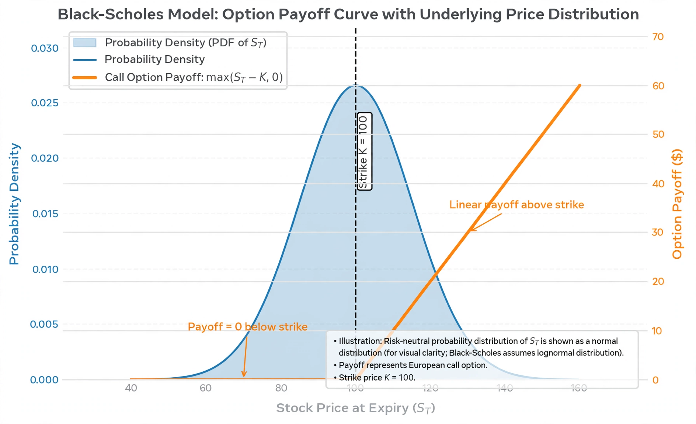

Black–Scholes model
From Wikipedia, the free encyclopedia

The Black–Scholes model (also Black–Scholes–Merton) is a mathematical model of financial markets from which the Black–Scholes formula derives a theoretical price for European-style options. Published in 1973 by Fischer Black and Myron Scholes, with key insights by Robert C. Merton, it founded modern derivatives pricing; Scholes and Merton received the 1997 Nobel Memorial Prize in Economic Sciences (Black had died in 1995).
Assumptions and formula
The model assumes the underlying asset's price follows geometric Brownian motion with constant volatility and interest rate, markets are frictionless, trading is continuous, and no arbitrage exists. Its formula prices a call option from five inputs — spot price, strike, time to expiry, risk-free rate and volatility — through the standard normal cumulative distribution terms N(d₁) and N(d₂). Delta hedging the option with the underlying replicates its payoff, making the price independent of the asset's expected return.
Impact
The formula arrived just as the Chicago Board Options Exchange opened (1973), turning options from a niche into a mass market computed on handheld calculators and then terminals. Its framework — risk-neutral valuation — underlies virtually all derivatives pricing, and its 'Greeks' (delta, gamma, vega, theta) remain the trader's dashboard.
Limitations
Real markets violate the assumptions: returns have fat tails, volatility clusters and smiles rather than staying constant, and prices jump. The model's misuse is often cited in accounts of the 1987 crash (portfolio insurance) and the collapse of Long-Term Capital Management (1998), where Merton and Scholes were partners — though practitioners treat it primarily as a quoting and hedging device rather than a literal truth about prices.